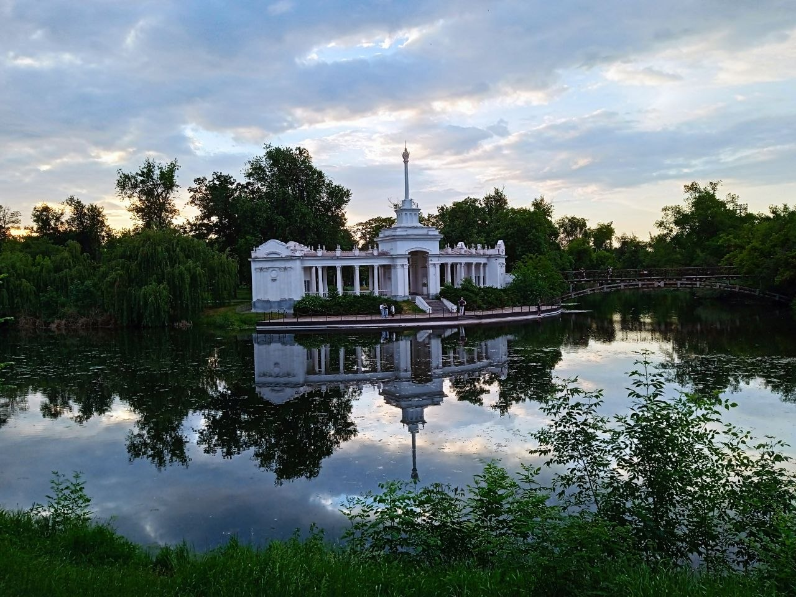
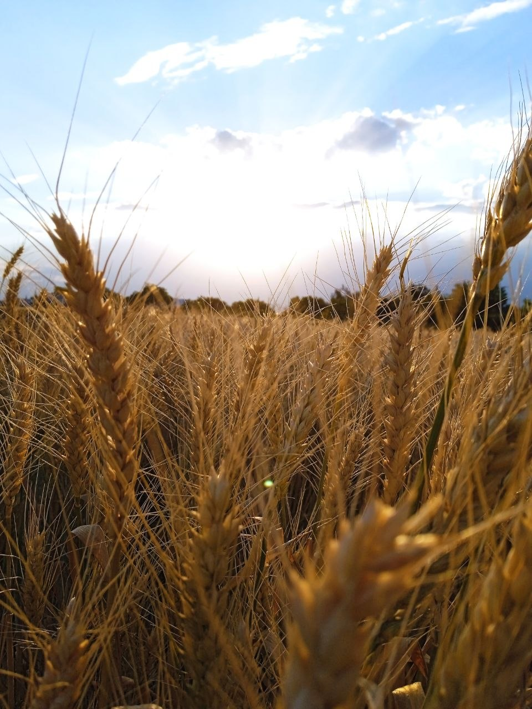
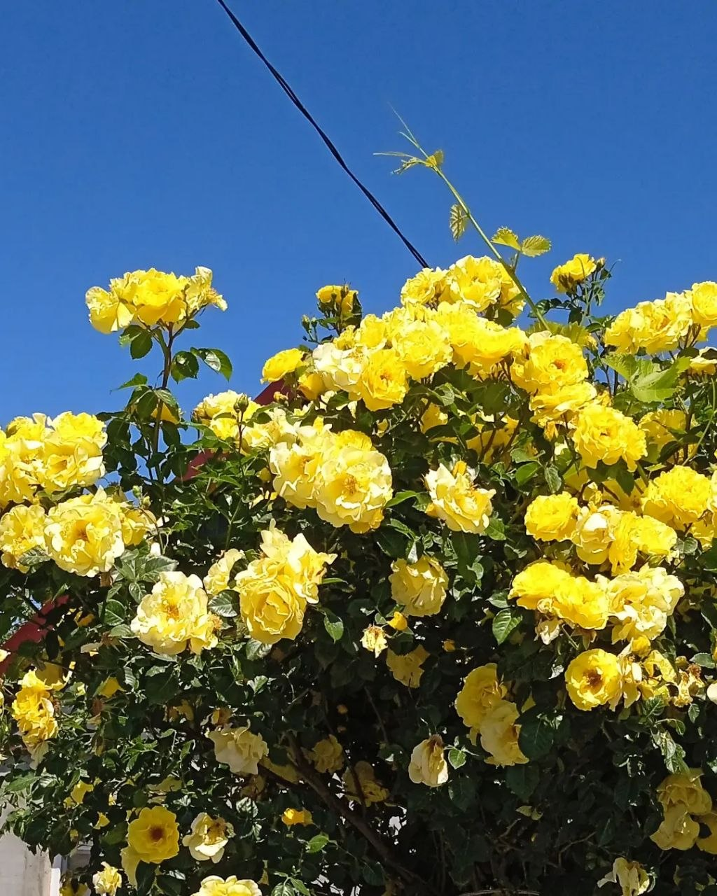
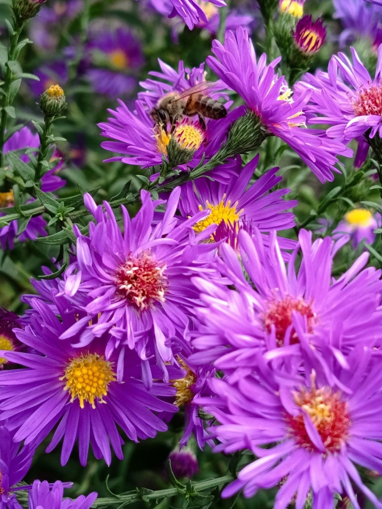
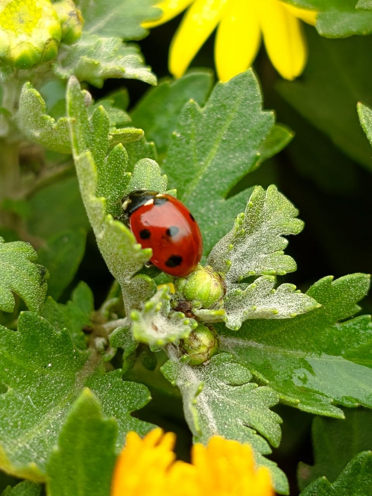
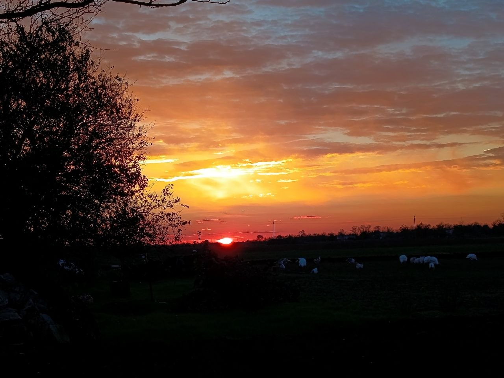
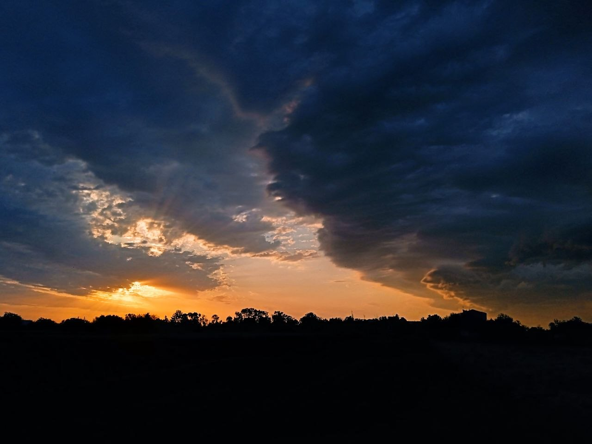

Галерея робіт 🌿
Тут зібрані мої улюблені кадри. Кожне фото — це якась особлива атмосфера або момент, який мені захотілося зберегти.

Перший хлопець на селі. Наш кіт вийшов попозувати прямо під вечірнє сонце.

Альтанка біля води. Люблю це місце за спокій і дзеркальне відображення у ставку.

Сонячне колосся. Літній вечір у полі, коли світло стає максимально теплим.

Жовті троянди. Цей кущ біля хати щоліта просто вибухає кольором.

Бджілка за роботою. Вдалося спіймати її зблизька на фіолетових квітах.

Сонечко на листі. Маленький червоний жучок у зелених джунглях.

Помаранчевий захід. Коли небо палає так, що важко відвести погляд.

Хмари перед заходом сонця. Глибокі й трохи тривожні вечірні барви.
Моє коротке відео про природу
Невеличка відеозамальовка з прогулянки — трохи живої атмосфери, звуків та вечірнього настрою.